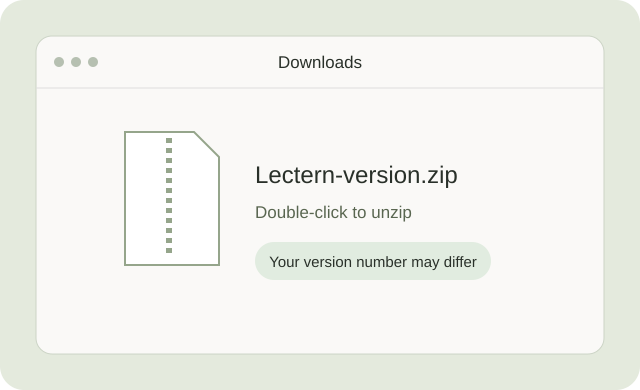
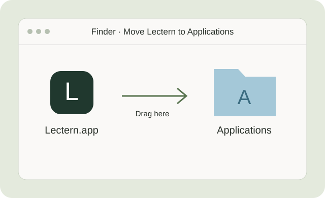
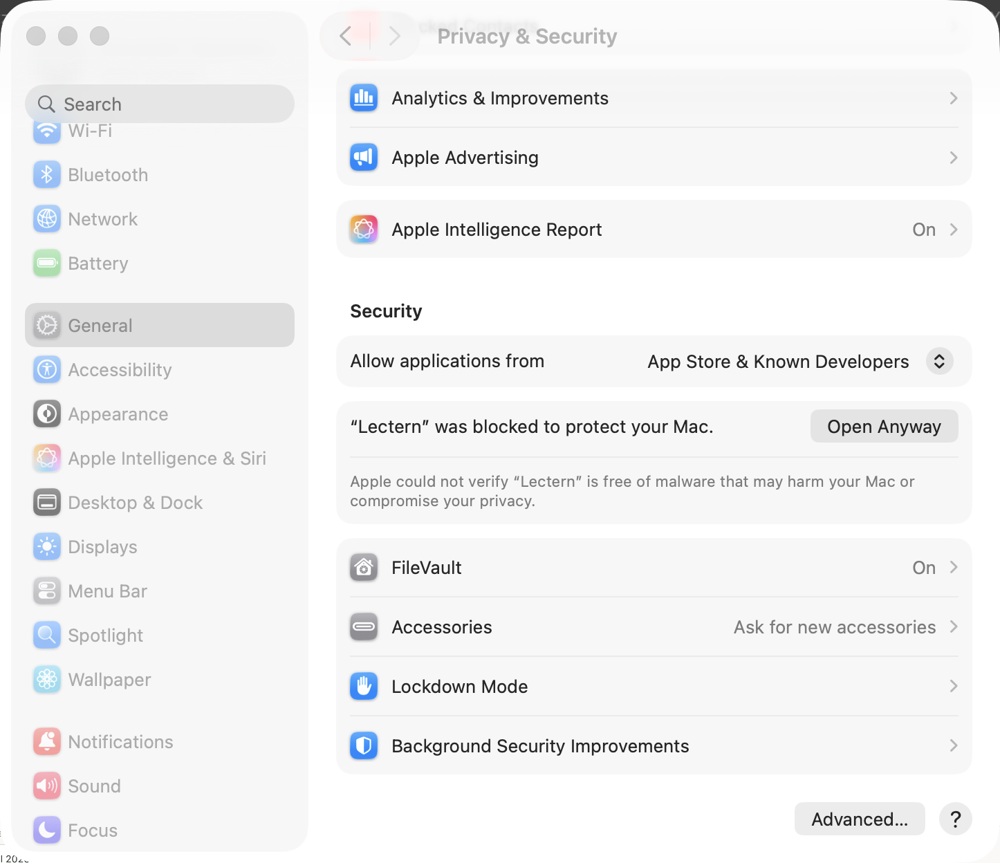
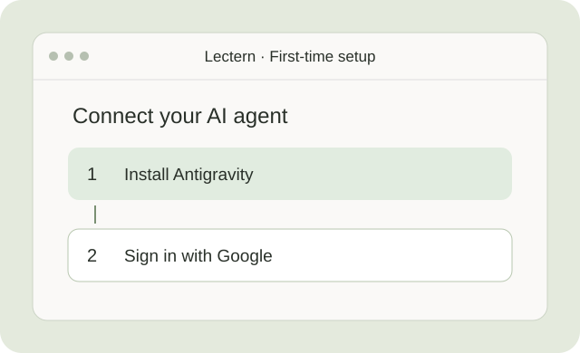

Canvas
Enter your school's Canvas address and a personal access token. To create a token in Canvas, open Account → Settings → Approved Integrations → New Access Token.
Lectern stores the token in your Mac's Keychain.
GETTING STARTED
Download Lectern, move it into Applications, and follow the setup assistant. We'll walk you through each step.
STEP 01
Click Download for Mac below. When the download finishes, open Finder and choose Downloads.
Double-click Lectern-version.dmg. A window opens with Lectern and an Applications folder. The version number in your filename may differ.
Download for Mac ↓
STEP 02
In the installer window, drag the Lectern icon onto the Applications folder. Wait for the copy to finish.
Open Applications in Finder and double-click Lectern. After copying, eject Install Lectern from the Finder sidebar. You can then delete the downloaded DMG.

STEP 03
If Lectern opens, go straight to step 4. If macOS blocks it because the developer cannot be verified, close the alert and open System Settings → Privacy & Security.
Scroll to Security, find the message about Lectern, and click Open Anyway. Confirm the next prompt and authenticate if asked.
The current release is not notarized by Apple. Only approve the copy you downloaded from Lectern's official release. Read Apple's explanation.

STEP 04
In Lectern's setup assistant, click Install Antigravity. Wait for the installation to finish, then choose Sign in with Google and complete sign-in in your browser.
Use a Google account with access to Antigravity. This connects the AI agent that creates your study materials. Its sign-in is separate from Google Docs.
You can return to the setup assistant in Settings → General.

OPTIONAL CONNECTIONS
You can skip these connections during setup and add them later.
Enter your school's Canvas address and a personal access token. To create a token in Canvas, open Account → Settings → Approved Integrations → New Access Token.
Lectern stores the token in your Mac's Keychain.
Choose Connect Google Docs and approve the requested access in your browser. This lets you export your notes to course documents.
IF YOU GET STUCK
Double-click the ZIP to unpack it, then drag Lectern.app from Downloads into Applications in the Finder sidebar. Continue with step 3. The DMG simply adds a window that makes this step easier.
Try opening Lectern from Applications first, dismiss the alert, then return to Privacy & Security. If this is a school-managed Mac and the option is unavailable, ask your IT team for help.
Make sure the runtime installation has finished and your Google account has access to Antigravity. Return to Lectern's Settings → Agents to manage the runtime and sign-in. Signing in to Google Docs does not connect the AI agent.
In Lectern, open Settings → General → Check for updates. The app also checks for releases automatically. You can download the latest installer again from this page if needed.
No. Canvas and Google Docs are optional. You can use Lectern for recording and study materials without connecting your school account.